Data Science
De l’analyse exploratoire au modèle comparé et validé : régularisation, méthodes d’ensemble, réseaux de neurones, simulation de Monte-Carlo, traitement distribué avec Spark.
- R
- Python
- PySpark
- ML
Master 2 Cybersécurité & Science des Données à l’Université Paris 8. Je modélise, je sécurise, et j’ai lancé deux plateformes web utilisées par de vrais clients : Fleurcadémique et NEXUS.
$ whoami --skills data = ["R", "Python", "scikit-learn", "PySpark"] cyber = ["Suricata", "ELK", "Fail2Ban", "OpenSSL/PKI"] build = ["React", "Node", "Flask", "Render"] $ cat status # Master 2 CSSD · Paris 8 · 2025-2026 # 2 plateformes en production
De l’analyse exploratoire au modèle comparé et validé : régularisation, méthodes d’ensemble, réseaux de neurones, simulation de Monte-Carlo, traitement distribué avec Spark.
Supervision et réponse à incident (IDS/IPS, SIEM, tableaux de bord), chiffrement des échanges avec une PKI maison, analyse de trafic et durcissement de serveurs Linux.
Deux plateformes conçues, développées et mises en ligne : du besoin client au paiement en ligne, avec intégration d’API publiques et automatisation des tâches répétitives.
Des produits réels, pensés pour des utilisateurs réels, avec paiement, formulaires, emails et intégrations d’API.
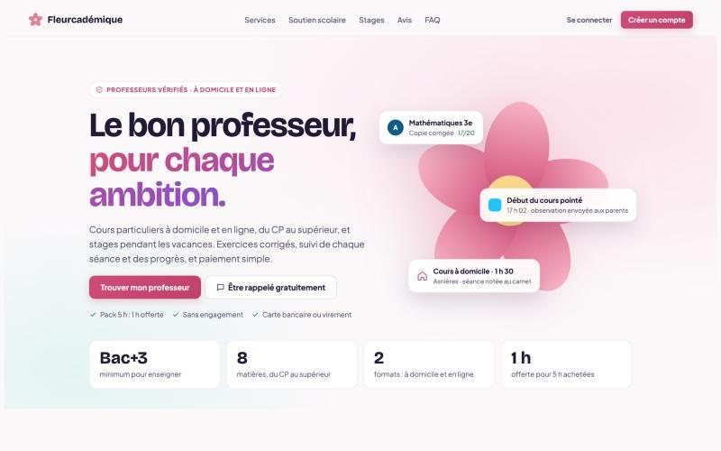
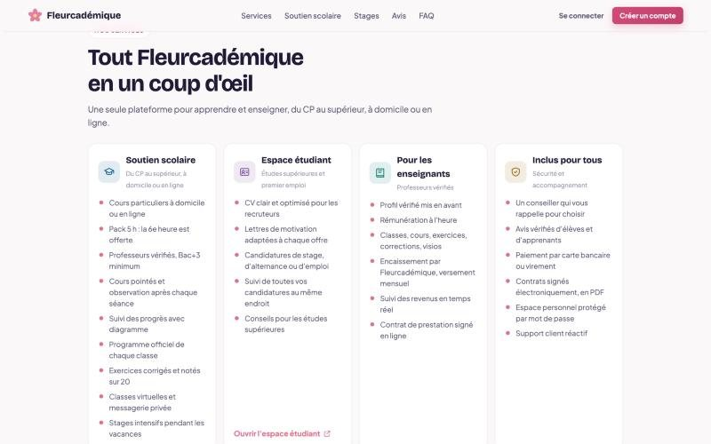
Une plateforme qui met en relation élèves et professeurs vérifiés, du CP au supérieur, à domicile ou en ligne, et qui gère toute la partie administrative à leur place.
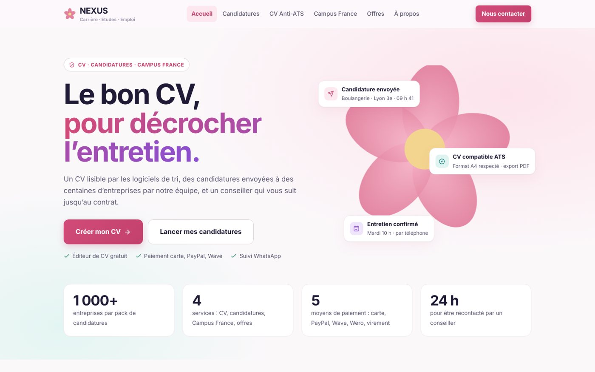
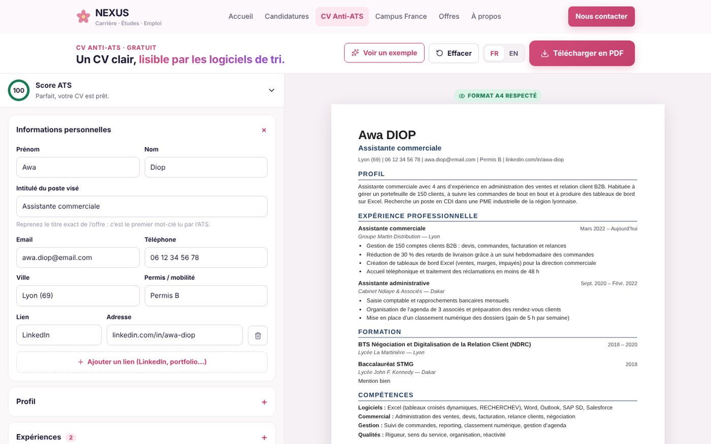
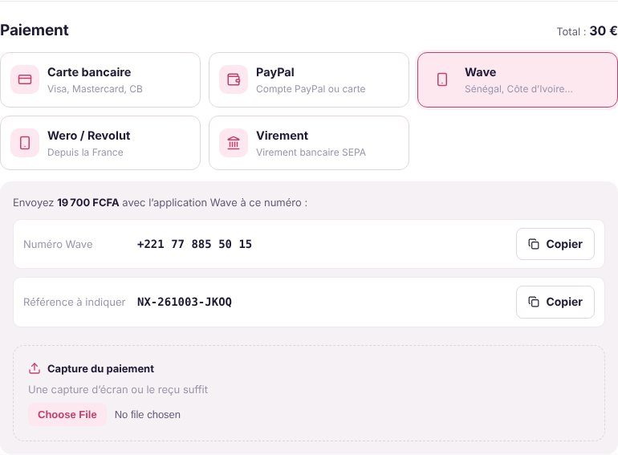
Un service pour les candidats en France et au Sénégal : un éditeur de CV compatible avec les logiciels de tri des recruteurs, des campagnes de candidatures spontanées et un accompagnement Campus France.
Chaque projet suit la même méthode : comprendre les données, tester plusieurs modèles, et justifier le choix final avec des métriques.
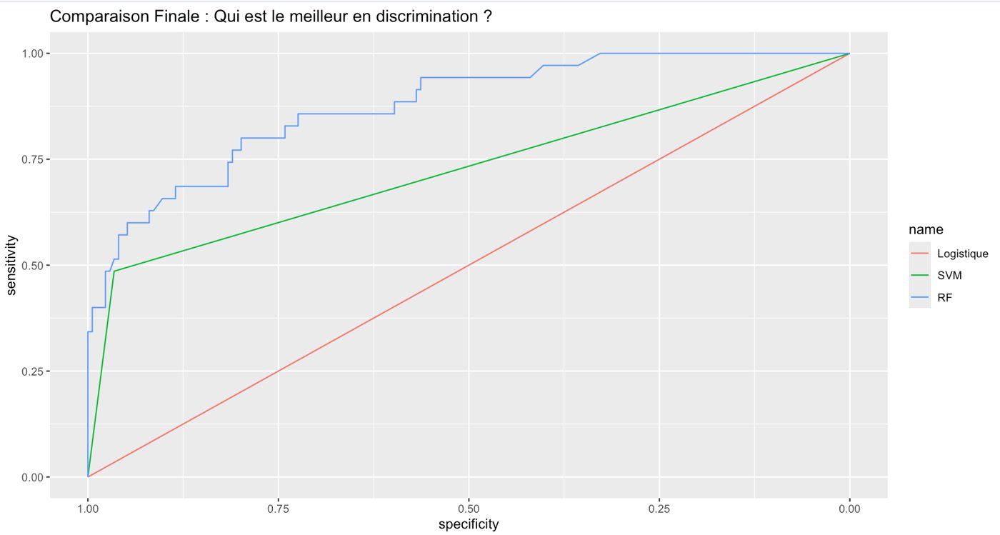
Prévoir les dépassements du seuil d’ozone à partir des prévisions du modèle physique MOCAGE et des données météo : EDA, ACP, régression linéaire et LASSO, logistique, kNN, SVM, arbres, Random Forest, boosting et réseaux de neurones.
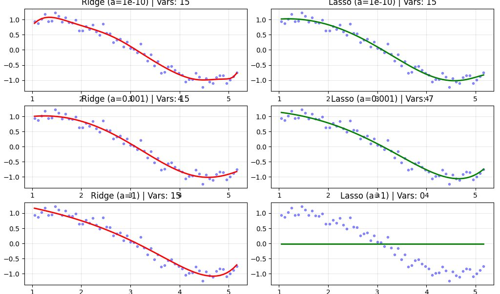
Comment éviter le surapprentissage : étude de l’effet du paramètre α sur les régressions Ridge, Lasso et Elastic Net, puis estimation statistique par simulation de Monte-Carlo (N = 10 000).
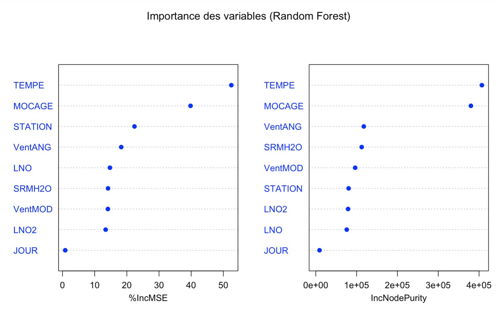
Variables les plus influentes du Random Forest (%IncMSE) pour expliquer les prévisions d’ozone.
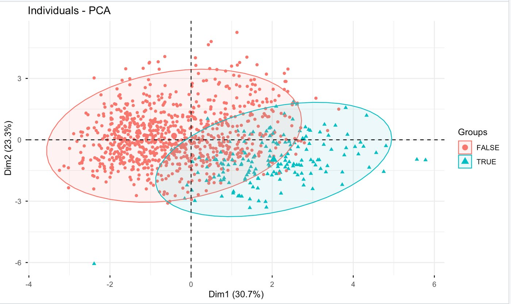
Séparation des jours avec et sans pic d’ozone sur les deux premiers axes.
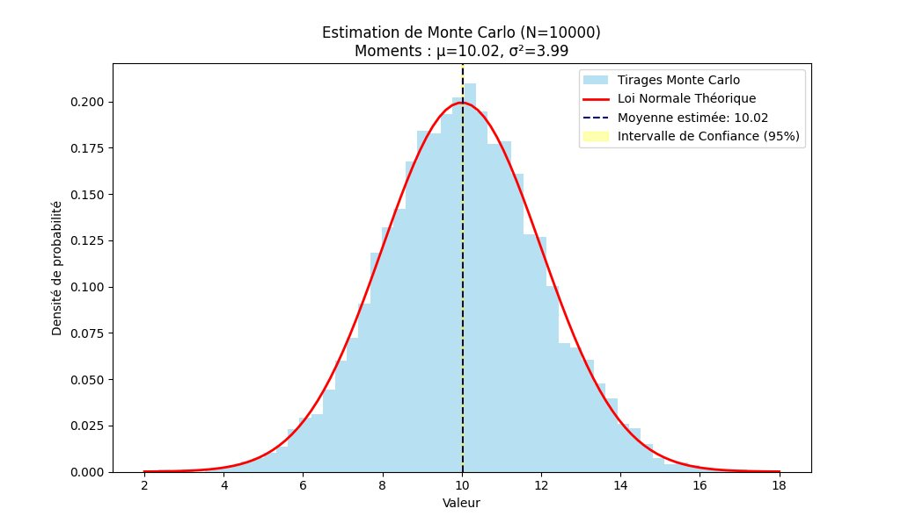
Estimation d’une moyenne et de son intervalle de confiance à 95 % par tirages répétés.
Guide complet appliqué au jeu de données e-commerce Olist : DataFrames, transformations, agrégations, jointures et Spark SQL.
Conception d’un capteur multi-technologies pour mesurer l’engagement en magasin : besoin, étude de marché, ergonomie, architecture technique, données et IA.
Des infrastructures montées de bout en bout, testées par des attaques simulées, et documentées avec les captures qui le prouvent.
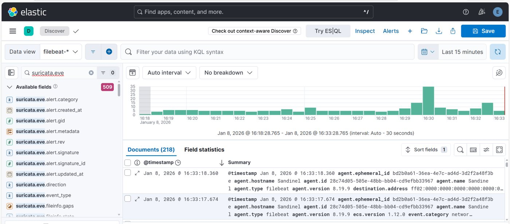
Conception d’un centre de supervision pour un client fictif : sonde Suricata, collecte Filebeat, Elasticsearch/Kibana sécurisés en TLS, réponse automatique Fail2Ban et tableaux de bord Grafana. Validation par une attaque brute-force simulée (Hydra).
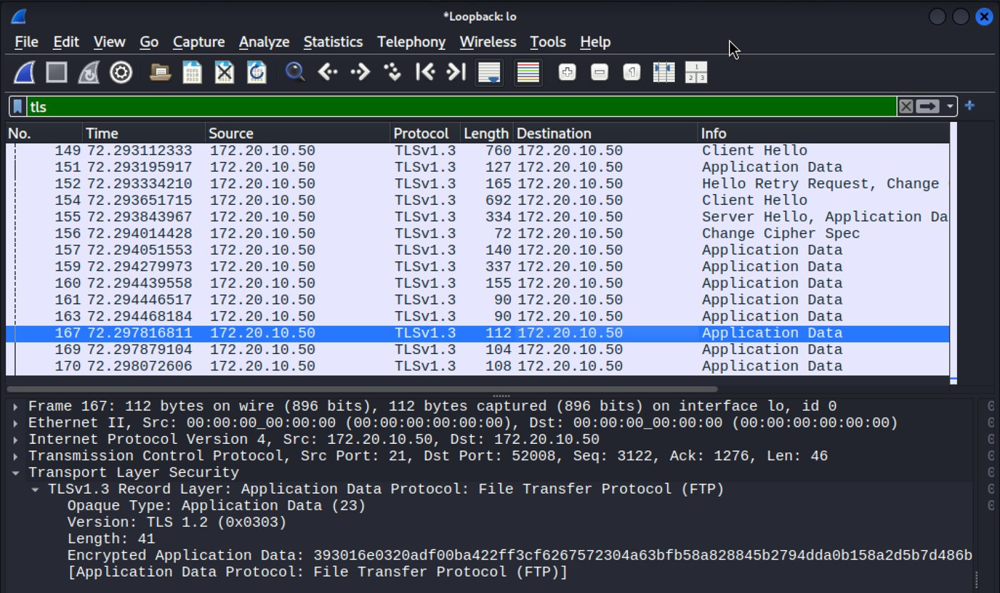
Démonstration du risque (mot de passe FTP lisible en clair dans Wireshark), puis création d’une autorité de certification avec OpenSSL, signature du certificat serveur, durcissement de vsftpd sous Kali Linux et validation avec FileZilla.
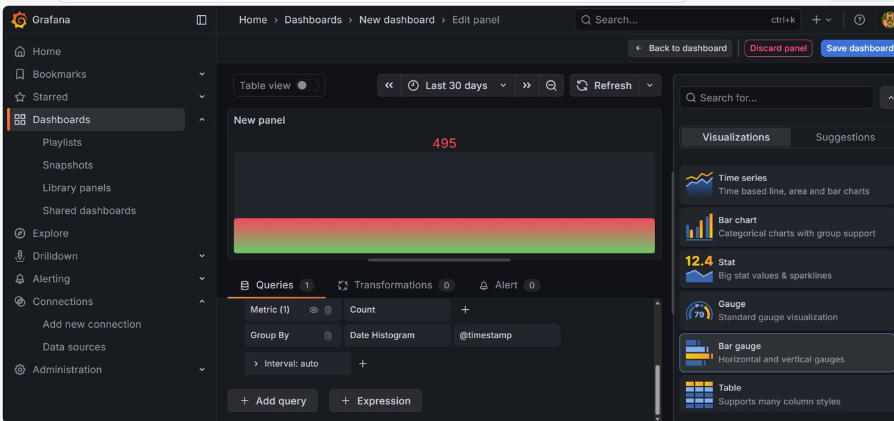
Métriques de sécurité en temps réel branchées sur Elasticsearch.
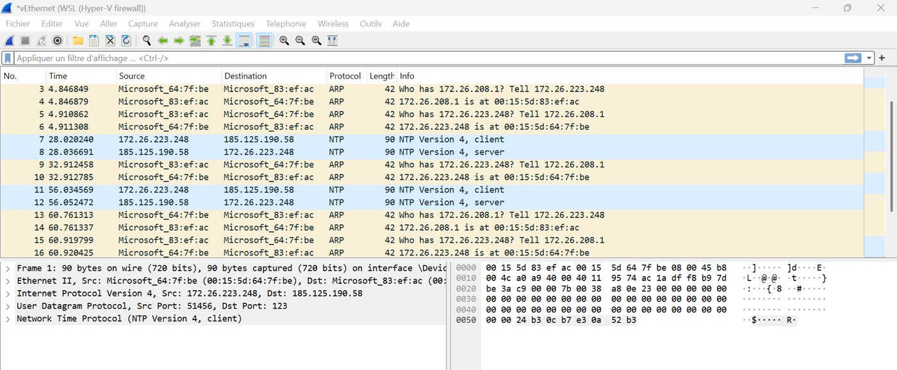
Lecture des paquets pendant l’attaque simulée puis confirmation du blocage.
Analyse géopolitique : réserves stratégiques, contournement des sanctions, minage et énergie, euro numérique.
Université Paris 8 Vincennes – Saint-Denis : IA, apprentissage statistique, sécurité des réseaux et des protocoles, big data.
Expérience en alternance en parallèle du Master.
Plateforme de soutien scolaire à domicile et en ligne, entreprise immatriculée.
Plateforme carrière : CV Anti-ATS, candidatures spontanées et accompagnement Campus France.
Je recherche un CDI de Data Scientist, d’analyste SOC ou d’ingénieure sécurité. Parlons de votre équipe.